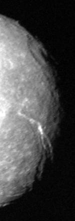

Titania, seen by Voyager 2
Titania is the largest moon of Uranus.
It was discovered by William Herschel and is named after a fairy from a play by Shakespeare.
It is a relatively dark, geologically inactive moon made of rock and ice and features craters and a few fault valleys.
The latter suggest geological activity in the past.
Titania has been visited only by the Voyager 2 mission.
The one to give the first Uranian moons names was astronomer John Herschel, his son.
His naming theme was supposed to be that of magical spirits from English literature.
Titania is named after the queen of the fairies from William Shakespeare's A Midsummer Night's Dream.
Titania orbits Uranus from a distance of around 436,000 km, making it the fourth most distant of the major moons.
It takes 8.7 Earth days to complete its orbit.
The orbit is nearly circular (0.001 eccentriciy) and inclined 0.34°.
Like many satellites, Titania is tidally locked to Uranus.
Titania has a diameter of 1576.8 km, making it the largest moon of Uranus.
Compared to other objects, it is the eight largest natural satellite in the Solar System and smaller than the dwarf planets Pluto, Eris, and possibly Haumea.
Titania consists of roughly equal parts ice and rock.
It is most likely differentiated into a rocky core and an icy mantle.
The presence of ammonia and methane, which have a lower freezing point than water, could allow for the existence of a subsurface ocean.
So far, the only compounds detected were water and carbon dioxide.

Gertrude crater (top), Messina Chasmata (bottom)
Titania is characterized by a dark surface covered in in water ice mixed with carbon dioxide and possibly dark organic materials.
The trailing surface on Titania is slightly darker, likely affected by charged particles from the magnetosphere of Uranus,
Titania's surface is heavily cratered.
Younger impacts deposit ice and create bright spots all across the surface.
The largest craters seen on the surface of Titania are Gertrude, 326 km in diameter, and Ursula (135 km).
Ursula is crossed by several canyons and the basin features smooth plains.
The deposits of ice there are different from those on other craters and are likely the result of cryovolcanism.
One possible crater of similar proportions to Gertrude might exist west of it, as images by Voyager 2 show what appears to be a central peak of an impact near the terminator.
The surface also features large fault valleys.
They are the result of past geological activity early in the history of Titania.
However, these valleys cut through older craters, suggesting that they are relatively young
Some of these valleys, like those of Messina Chasmata, are nearly 1,500 km long and were seen near the terminator at the time of the Voyager flyby.
Deposits of highly reflective fresh ice can be seen along the valley walls.
Since carbon dioxide was detected, it has been suggested that Titania might have a tenuous seasonal atmosphere.
So far it has not been detected.
Because of the extreme axial tilt of Uranus, Titania experiences great seasonal changes.
During the Voyager 2 flyby, only the southern hemisphere was luminated by the Sun, leaving the north undocumented.
Voyager 2 was the only spacecraft to visit Titania in 1986.
It made a flyby with the closest approach at 365,200 km, making images at a relatively low spatial resolution.
A number of missions to Uranus have been proposed by ESA, NASA, and CNSA to revisit the Uranus system.